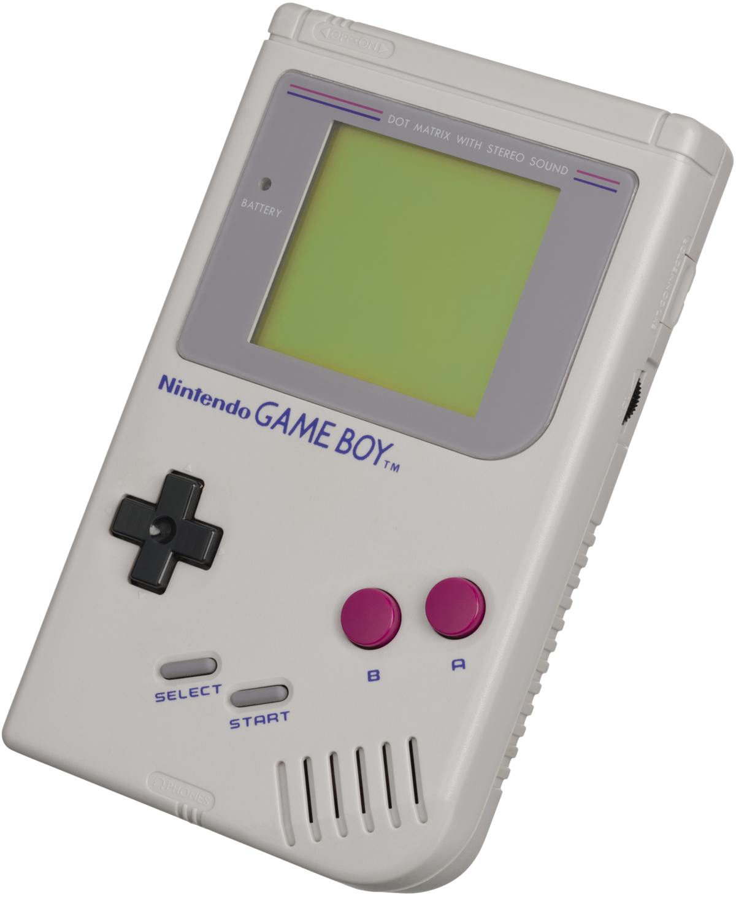
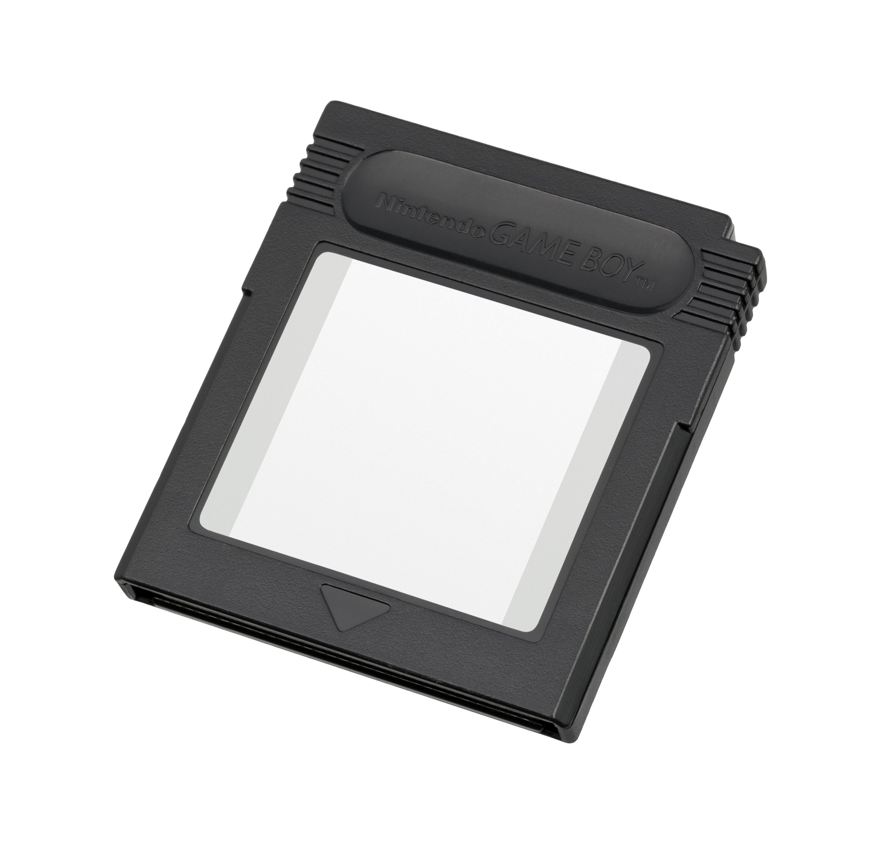

The Handheld Console
First of many

The Game Boy was first released in 1989 in Japan, followed by
North America and Europe during the next year. The console is the first
handheld of the Game Boy family, developed and manufactured by
Nintendo. The project was managed by the same team which worked
on the Game and Watch handheld consoles and many SNES games.
Even though the Game Boy isn't the first handheld developed by Nintendo,
it had by far a bigger success than the first. The fact that its
fourth-generation competitors were technologically superior still wasn't
enough to stop this machine from making history. It is in fact only the first
of a series of handheld consoles that shaped the market forever.
Hardware

The Game Boy presents itself as a sturdy device equipped with a handful of
buttons: four operation buttons labeled "A", "B", "SELECT", "START"; a
directional pad; two dials for volume and contrast; a on-off switch. The
user inserts the game cartridges in the slot situated at the top.
The console also contains some input/output connectors. It is in fact
possible to plug a power supply jack for external rechargeable batteries,
connect headphones and even link two consoles through the link cable.
| Size | 90 mm x 148 mm x 32 mm |
| Power | 6 V, 0.7 W (4x AA batteries) |
| CPU | Custom 8-bit Sharp LR35902, 4.19 MHz |
| RAM | 8 KiB of S-RAM |
| Video RAM | 8 KiB |
| Display | 160 (width) x 144 (height) pixels, for 47 x 43 mm |
| Color | 2-bit (4 shades of gray: olive green in the original) |
Various Upgrades
Play it Loud!
In 1995 Nintendo started a new series of Game Boy models with colored cases. The technical sepcifications of the unit remain completely unchanged, but the introduction of these variations set a precedent for future Nintendo consoles in general.
Game Boy Pocket
The Game Boy Pocket was released in 1996 and consisted in a smaller, lighter unit that required AAA batteries and came at a lower price compared to its first iteration. This version also got several limited-editions, including for example a gold-metal model (exclusive to Japan).
Game Boy Light
Following the Pocket version, Nintendo introduced a last version of the Game Boy, called Game Boy Light. This system was released in 1998 and featured a backlight for the screen, allowing the use of the console in low-light conditions. This iteration also brought back the AA batteries power supply, pushing the hours of gameplay to up to 20. This was one of the most important additions and was also used in future consoles (not in the direct successor though).